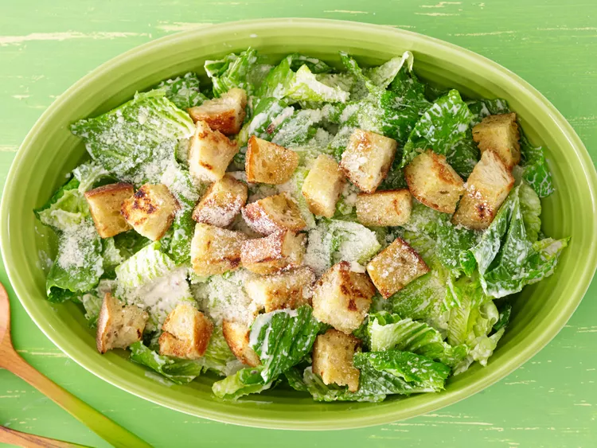

Bes Homemade Caesar Salad Dressing

Description
An easy-to-follow recipe on how to make the best caesar salad dressing
from scratch! You'll never buy from the store again!
It has a scrumptious, rich taste, all thanks to the prescence of
anchovies, garlic, lemon, mustard, and parmesan. Try serving it with
a crusty italian bread.
Ingredients
- 6 cloves of garlic
- 3/4 cup of mayonnaise
- 6 tablespoons of grated parmesan cheese, divided
- 5 anchovy fillets, minced
- 1 tablespoon lemon juice, or more (to taste)
- 1 teaspoon Worcestershire sauce
- 1 teaspoon Dijon mustard
- Salt and ground black pepper (to taste)
- 1/4 cup olive oil
- 4 cups day-old bread, cubed
- 1 head romaine lettuce, torn into bite-sized pieces